30 OCR entries (duplicates kept).
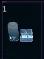
1
Food - Compressed Food
Food units provide about a week's supply of meals each. Food can be
scarce in Evochron. While it is usually very low in value, some systems
do pay substantially more.
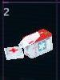
2
Meds - Medical Supplies
Medical supplies are an essential part of survival in Evochron. High
radiation exposure and virtually non-existent preventative health care
result in a higher than normal demand for medical supplies, which can
include medicine, equipment, and information.
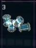
3
Hydr - Hydrogen Cells
Hydrogen fuel cells are a common medium level energy source that some
systems use for general purpose electrical power needs. Their moderate
value makes them a popular shipping choice.
4
Elec - Electrical Supplies
Electronics are in demand, but are also high in supply. They generally
aren't a valuable commodity, but shipping supplies of electronics can
be an easy way for new mercenaries to make quick credits.
5
Solr - Solar Cells
Solar cells are a low end energy source. Don't expect much for these
primitive devices, but in the right system, they can be worth the cargo
space.
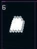
6 Metl - Metal Ore
Metal ore is a low value commodity that provides the raw material needed
for manufacturing. Delivering this item doesn't usually provide much profit
unless there is a temporary demand for it.
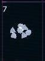
7 Diam - Diamonds
Diamonds are a high value commodity used in a variety of applications
ranging from cutting tools to optical equipment. They are almost always
in demand and are a primary incentive for mining.
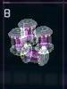
8
Anti - Antimatter Cells
Anti-matter cells are a high end energy source that are extremely expensive
to produce and provide a very long lifespan. As a result, a premium is
paid for these devices to anyone who can deliver them.
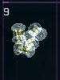
9
Fusn - Fusion Generators
Fusion cells are also a high end energy source, but are much easier
to produce. They feature a very long lifespan and usually provide a high
price for shipping.
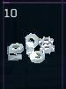
10 Mach - Machinery Parts
Machinery parts generally consist of cast or forged components in fairly
high demand (brackets, sprockets, springs, etc). They usually provide
a fairly high profit, much higher than raw metal alloys alone.
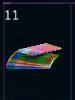
11 Text - Clothing/Fabric
Textiles are generally the cheapest items to transport and are generally
best left out of a cargo bay unless you've got the extra space.
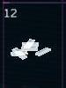
12 Plat - Platinum Units
Platinum is generally the most valuable commodity in Evochron. It is
used for electronics, primarily in the computer and weapon systems of
spacecraft, due to its longevity and conductive properties. Many mercenaries
will jettison their existing cargo to recover platinum.
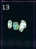
13 Biol - Biological Units
Biological Units consist of organic material. The material can be
from plant or animal samples taken. Such materials can be very valuable
in the production of genetic sequences or scientific research. While
not generally valuable in most industries, some locations pay a premium
for it.
14
Oxyg - Oxygen Units
Oxygen is considered the life-blood of space exploration. While most
spacecraft can recycle and even generate most of their oxygen needs in-flight,
pure oxygen is still valuable in certain industries and for replenishing
spacecraft oxygen production/recycle systems.
15 Gold - Gold Units
Gold remains a very valuable commodity. It is useful in the production
of electronics and their radiation shielding. It is also used as money
in some economies and is valuable to jewelry industries.
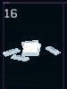
16 Silv - Silver Units
Silver is generally less valuable than gold, although it has many uses
that keep it valuable in most economies. Certain digital and solar technologies
also keep it in high demand.
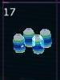
17
Watr - Water Units
Water is generally not too valuable, but is still worth some credits
when it can be delivered without recycling or production procedures.
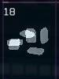
18 Armr - Armor Plates
Armor is a somewhat valuable commodity used in the construction of
spacecraft hulls and cargo containers. It's not a very common trade item
as most armor is quickly used.
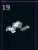
19 Memr - Memory Banks
Memory banks consist of numerous one zettabyte storage cells packed
into unit sized integrated circuits. They are designed to be linked together
for increased storage capacity.
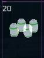
20
Batt - Batteries
Batteries are universal storage cells designed to work in numerous
different configurations in a variety of different applications ranging
from weapons to equipment. Advanced insulation technology allows them
to be used in virtually any environment.
21 EEmt - Energy Emitters
Energy emitters are a universal component used in the construction
of various equipment items. They can direct a focused beam of energy useful
in mining, fuel recovery, hull repair, or a number of other applications.
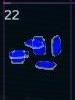
22 RefM - Reflective Mirrors
Reflective mirrors can redirect light or other forms of energy within
a device. They are flat and do not alter the source of energy directed
at them.
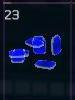
23
FclM - Focal Mirrors
Focal mirrors can direct light or other forms of energy to a specific
point within a device. They focus the energy into a more compact and
higher charged state.
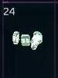
24 RadR - Radio Receivers
Radio receivers are used in devices to accept external radio signals
and either relay or translate them into a required format. They include
all necessary processors and universal interface connections for a variety
of applications.
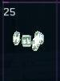
25 RadT - Radio Transmitters
Radio transmitters are used in devices to broadcast radio signals in
numerous different formats. They include all necessary processors and
universal interface connections for a variety of applications.
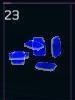
23 FcIM - Focal Mirrors
Focal mirrors can direct light or other forms of energy to a specific
point within a device. They focus the energy into a more compact and
higher charged state.
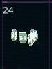
24 RadR - Radio Receivers
Radio receivers are used in devices to accept external radio signals
and either relay or translate them into a required format. They include
all necessary processors and universal interface connections for a variety
of applications.
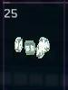
25 RadT - Radio Transmitters
Radio transmitters are used in devices to broadcast radio signals in
numerous different formats. They include all necessary processors and
universal interface connections for a variety of applications.
26 PrtA - Particle Accelerators
Particle accelerators are used in devices to accelerate energy cast
into them. They are compatible with many different configurations and
energy types.
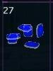
27
Lens - Lenses
Lenses are constructed of transparent heat resistant metals and are
used in the production of many different devices. They are often combined
with emitters, mirrors, and/or accelerators to produce desired items.